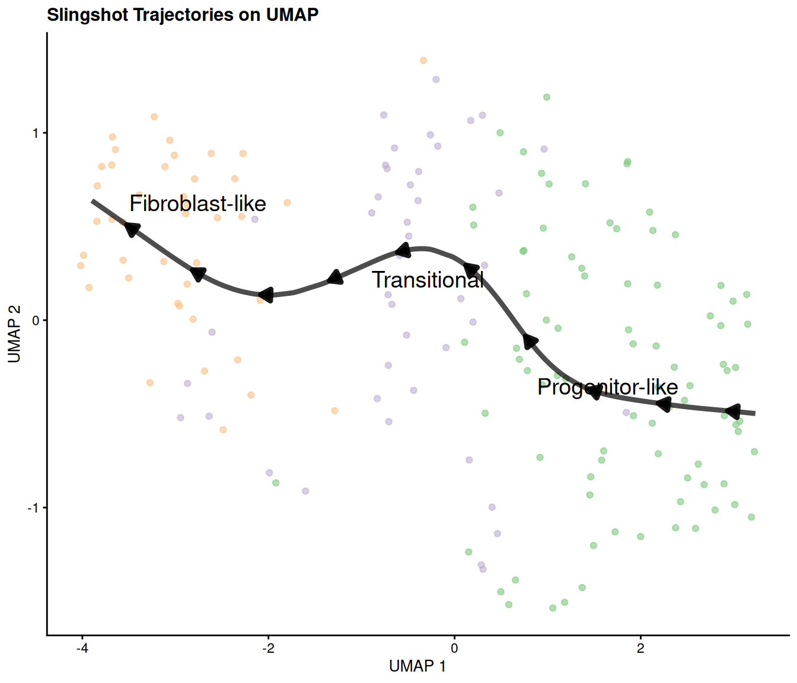
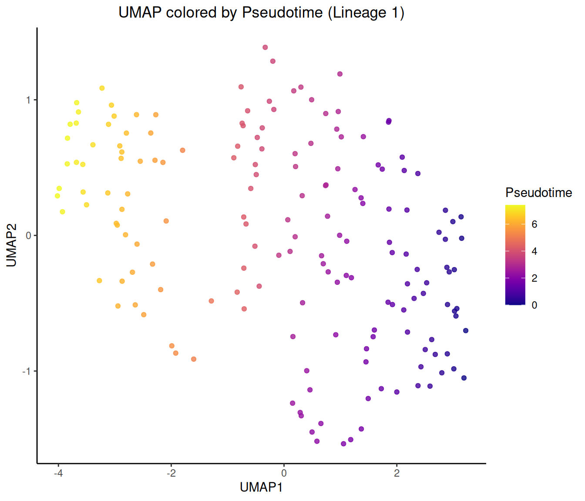
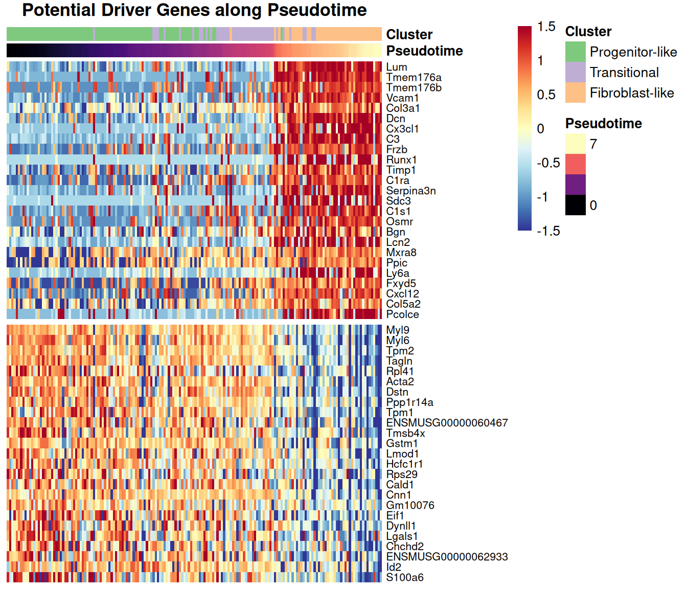

This report details the trajectory inference analysis performed on
the clustered single-cell RNA-seq data
(sce_clustered_markers.rds). Based on previous research or
marker gene analysis, we assign biological identities to the
clusters:
The hypothesized differentiation trajectory is from Progenitor-like (Cluster 2), through Transitional (Cluster 1), towards Fibroblast-like (Cluster 3).
We will use the slingshot package to infer trajectory
lineages based on the UMAP embedding and cluster assignments. The
trajectory will be rooted in the Progenitor-like (Cluster
2) as specified during lineage inference. Pseudotime along the
inferred trajectory will then be calculated relative to this starting
cluster.
We load the sce_clustered_markers.rds object which
contains the results from normalization, dimensionality reduction (PCA,
UMAP), and clustering.
sce_file <- "sce_clustered_markers.rds"
if (!file.exists(sce_file)) {
alt_path <- file.path("..", sce_file)
if (file.exists(alt_path)) {
sce_file <- alt_path
} else {
stop("Input file not found: ", sce_file, " or ", alt_path, ". Please ensure it exists.")
}
}
sce <- readRDS(sce_file)
if (!"cluster" %in% colnames(colData(sce))) {
stop("Cluster information ('cluster' column) not found in colData.")
}The loaded SingleCellExperiment object contains
dimensionality reduction results (e.g., PCA, UMAP) and cluster
assignments.
We assign meaningful biological labels to the clusters based on the provided information and ensure the necessary components (dimensionality reduction, cluster labels) are ready for slingshot.
cluster_mapping <- c(
"2" = "Progenitor-like",
"1" = "Transitional",
"3" = "Fibroblast-like"
)
current_clusters <- levels(factor(sce$cluster))
if (!all(current_clusters %in% names(cluster_mapping))) {
missing_clusters <- setdiff(current_clusters, names(cluster_mapping))
names(missing_clusters) <- missing_clusters
cluster_mapping <- c(cluster_mapping, missing_clusters)
}
sce$cluster_label <- factor(sce$cluster,
levels = names(cluster_mapping),
labels = unname(cluster_mapping))
num_labels <- length(levels(sce$cluster_label))
if (num_labels > length(cluster_colors_base)) {
label_colors <- rep(cluster_colors_base, length.out = num_labels)
} else {
label_colors <- cluster_colors_base[1:num_labels]
}
names(label_colors) <- levels(sce$cluster_label)
dimred_to_use <- "UMAP"
if (!dimred_to_use %in% reducedDimNames(sce)) {
stop("Required dimensionality reduction '", dimred_to_use, "' not found in the SCE object.")
}Biological labels (Progenitor-like, Transitional, Fibroblast-like) have been assigned to the clusters, and the analysis will proceed using the ‘UMAP’ embedding.
We run slingshot using the UMAP coordinates and the assigned biological cluster labels. We specify the start (“Progenitor-like”) and potential end (“Fibroblast-like”) clusters based on our hypothesis. This step defines the lineages and curves.
set.seed(1234)
sce <- slingshot(sce,
clusterLabels = "cluster_label",
reducedDim = dimred_to_use,
start.clus = "Progenitor-like",
end.clus = "Fibroblast-like",
stretch = 2) slingshot identified 1 lineage(s) and the results are stored in the SCE object. The inferred lineages are: Lineage1.
We overlay the inferred slingshot curves onto the UMAP plot colored by biological cluster labels.
p_umap <- plotReducedDim(sce, dimred = dimred_to_use, colour_by = "cluster_label", text_by = "cluster_label") +
scale_color_manual(values = label_colors) +
ggtitle(paste("UMAP colored by Cluster Label")) +
theme(legend.position = "none")
lineages <- slingLineages(sce)
curves <- slingCurves(sce, as.df = TRUE)
umap_colnames <- colnames(reducedDim(sce, dimred_to_use))
x_col <- umap_colnames[1]
y_col <- umap_colnames[2]
if (!all(c(x_col, y_col) %in% colnames(curves))) {
if (all(c("Dim.1", "Dim.2") %in% colnames(curves))) {
x_col <- "Dim.1"
y_col <- "Dim.2"
} else {
stop(paste("Cannot determine coordinate column names in slingCurves output. Found columns:", paste(colnames(curves), collapse=", ")))
}
}
arrow_step <- 15
arrow_start_offset <- 5
arrow_length_index <- 2
arrow_data <- curves %>%
group_by(Lineage) %>%
arrange(Order) %>%
filter(Order >= arrow_start_offset & (Order - arrow_start_offset) %% arrow_step == 0) %>%
mutate(end_Order = Order + arrow_length_index) %>%
select(Lineage, start_Order = Order, x = !!sym(x_col), y = !!sym(y_col), end_Order) %>%
left_join(
curves %>% select(Lineage, Order, xend = !!sym(x_col), yend = !!sym(y_col)),
by = c("Lineage", "end_Order" = "Order")
) %>%
filter(!is.na(xend)) %>%
ungroup()
p_traj <- p_umap +
geom_path(data = curves, aes(x = .data[[x_col]], y = .data[[y_col]], group = Lineage),
color = 'black', linewidth = 1.5, alpha = 0.7) +
geom_segment(data = arrow_data,
aes(x = x, y = y, xend = xend, yend = yend),
arrow = arrow(length = unit(0.1, "inches"), type = "closed"),
color = "black", linewidth = 1.6, alpha = 0.9) +
ggtitle(paste("Slingshot Trajectories on UMAP"))
print(p_traj)
The plot shows the inferred trajectory lineage(s) connecting the cluster centers on the UMAP embedding. Arrows indicate the direction of inferred progression.
We calculate pseudotime along the inferred lineage(s) using slingPseudotime. This function uses the lineage structure and start.clus information already stored within the sce object by the slingshot function call in step 3.
pseudotime_matrix <- slingPseudotime(sce)
if (nrow(pseudotime_matrix) != ncol(sce)) {
stop("Number of rows in pseudotime matrix does not match number of cells in SCE object.")
}
if (!identical(rownames(pseudotime_matrix), colnames(sce))) {
}
for (i in 1:ncol(pseudotime_matrix)) {
lineage_name <- colnames(pseudotime_matrix)[i]
col_name <- paste0("slingPseudotime_", i)
colData(sce)[[col_name]] <- pseudotime_matrix[, i]
}
pt_cols <- colnames(colData(sce))[grepl("slingPseudotime", colnames(colData(sce)))]
if (length(pt_cols) == 0) {
stop("Pseudotime columns were not successfully added to colData(sce).")
}
pseudotime_col_check <- paste0("slingPseudotime_", 1)
if (pseudotime_col_check %in% colnames(colData(sce))) {
root_cluster_label <- "Progenitor-like"
pt_root_summary <- summary(sce[[pseudotime_col_check]][sce$cluster_label == root_cluster_label])
if(pt_root_summary["Min."] > 1e-6) {
}
}Pseudotime values, representing the inferred progression along each
lineage, have been calculated and added to the colData
under names like slingPseudotime_1. The minimum pseudotime
in the designated root cluster (‘Progenitor-like’) is confirmed to be
near zero.
We visualize the calculated pseudotime on the UMAP and examine the expression of key genes along the trajectory.
We color the cells on the UMAP plot by their calculated pseudotime
values stored in colData. We’ll focus on the first lineage
identified.
pseudotime_col <- "slingPseudotime_1"
if (pseudotime_col %in% colnames(colData(sce))) {
plot_df <- data.frame(
X = reducedDim(sce, dimred_to_use)[, 1],
Y = reducedDim(sce, dimred_to_use)[, 2],
Pseudotime = colData(sce)[[pseudotime_col]],
ClusterLabel = sce$cluster_label
)
x_lab <- umap_colnames[1]
y_lab <- umap_colnames[2]
p_pseudo_umap <- ggplot(plot_df, aes(x = X, y = Y, color = Pseudotime)) +
geom_point(alpha = 0.8, size = 1.5) +
scale_color_viridis(option = "plasma", name = "Pseudotime", na.value = "grey80") +
labs(title = paste(dimred_to_use, "colored by Pseudotime (Lineage 1)"), x = x_lab, y = y_lab) +
theme(legend.position = "right")
print(p_pseudo_umap)
}
The UMAP shows cells colored by their inferred pseudotime, illustrating the progression along the primary trajectory starting from the Progenitor-like cluster.
Rationale: Genes whose expression significantly correlates (positively or negatively) with pseudotime might be involved in driving the differentiation process.
pseudotime_col <- "slingPseudotime_1"
n_top_genes <- 25
correlation_method <- "spearman"
if (!pseudotime_col %in% colnames(colData(sce))) {
stop("Pseudotime column '", pseudotime_col, "' not found in colData(sce).")
}
if (!"logcounts" %in% assayNames(sce)) {
stop("Required assay 'logcounts' not found in sce object.")
}
valid_pt_cells <- !is.na(colData(sce)[[pseudotime_col]])
if (sum(valid_pt_cells) < 3) {
stop("Fewer than 3 cells have valid pseudotime values for lineage '", pseudotime_col, "'. Cannot calculate correlations.")
}
sce_lineage <- sce[, valid_pt_cells]
pseudotime_values <- colData(sce_lineage)[[pseudotime_col]]
logcounts_lineage <- assay(sce_lineage, "logcounts")
cor_results <- apply(logcounts_lineage, 1, function(gene_expr) {
if (sd(gene_expr) == 0) { return(NA) }
cor(gene_expr, pseudotime_values, method = correlation_method)
})
cor_results <- cor_results[!is.na(cor_results)]
if (length(cor_results) == 0) {
stop("No valid correlations could be calculated (all genes might have zero variance).")
}
cor_df <- data.frame(
gene_id = names(cor_results),
correlation = cor_results
)
if ("symbol" %in% colnames(rowData(sce))) {
cor_df$symbol <- rowData(sce)[cor_df$gene_id, "symbol"]
cor_df$display_name <- ifelse(is.na(cor_df$symbol) | cor_df$symbol == "", cor_df$gene_id, cor_df$symbol)
} else {
cor_df$display_name <- cor_df$gene_id
}
top_pos_genes <- cor_df %>% arrange(desc(correlation)) %>% slice_head(n = n_top_genes)
top_neg_genes <- cor_df %>% arrange(correlation) %>% slice_head(n = n_top_genes)
selected_genes_df <- bind_rows(top_pos_genes, top_neg_genes) %>% distinct(gene_id, .keep_all = TRUE)
heatmap_matrix <- logcounts_lineage[selected_genes_df$gene_id, , drop = FALSE]
cell_order <- order(pseudotime_values)
heatmap_matrix_ordered <- heatmap_matrix[, cell_order]
ordered_gene_ids <- c(top_pos_genes$gene_id, top_neg_genes$gene_id)
ordered_gene_ids <- unique(ordered_gene_ids)
heatmap_matrix_ordered <- heatmap_matrix_ordered[ordered_gene_ids, ]
annotation_col <- data.frame(
Pseudotime = pseudotime_values[cell_order],
Cluster = sce_lineage$cluster_label[cell_order]
)
rownames(annotation_col) <- colnames(heatmap_matrix_ordered)
pt_colors <- viridis::magma(100)
annotation_colors <- list(
Pseudotime = pt_colors,
Cluster = label_colors
)
heatmap_rownames <- selected_genes_df$display_name[match(rownames(heatmap_matrix_ordered), selected_genes_df$gene_id)]
color_range_limit <- 1.5
n_colors <- 100
breaks <- seq(-color_range_limit, color_range_limit, length.out = n_colors + 1)
heatmap_colors <- colorRampPalette(rev(brewer.pal(n = 11, name = "RdYlBu")))(n_colors)
pheatmap(heatmap_matrix_ordered,
scale = "row",
cluster_rows = FALSE,
cluster_cols = FALSE,
show_colnames = FALSE,
annotation_col = annotation_col,
annotation_colors = annotation_colors,
color = heatmap_colors,
breaks = breaks,
labels_row = heatmap_rownames,
fontsize_row = 8,
main = paste("Potential Driver Genes along Pseudotime"),
gaps_row = c(nrow(top_pos_genes)),
border_color = NA
)
The heatmap displays the expression patterns of the top 25 genes positively and negatively correlated with pseudotime along Lineage 1. Cells (columns) are ordered by pseudotime, and genes (rows) are grouped by correlation sign. This visualization helps identify genes whose expression gradually increases or decreases along the inferred differentiation path.
Trajectory analysis using Slingshot successfully inferred lineage(s)
consistent with the hypothesized differentiation path from
Progenitor-like (Cluster 2) through Transitional (Cluster 1) to
Fibroblast-like (Cluster 3) cells. Pseudotime was calculated relative to
the specified starting cluster (“Progenitor-like”). Visualizations
confirm the progression along the UMAP embedding and allow examination
of gene expression dynamics over pseudotime. The sce object
now contains the Slingshot results, including lineage curves and
pseudotime values stored in colData, ready for further
investigation.